|
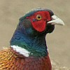 | 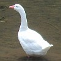 | 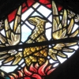 | 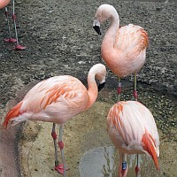 | 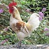 |  |
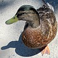 |
| Jèrriais | Angliais |
|
|
|
| un aigl'ye | eagle |
| un albatros | albatross |
| eune albette | sanderling |
| un alicracq | red-breasted merganser |
| eune alouette | skylark |
| eune alouette dé banque | rock pipit |
| eune alouette dé grève | rock pipit |
| eune alouette dé rotchi | rock pipit |
| eune alouette dé mielle | meadow pipit, lapwing |
| un âne dé mé | guillemot |
| eune autruche | ostrich |
| eune bannetinne | bantam |
| eune bânêque | brent goose |
| eune bênacl'ye | brent goose |
| eune bécache | woodcock |
| eune bécassine | snipe |
| la bécachinne dé grève | knot |
| eune bèrge | godwit |
| un blianc cahouain | barn owl |
| eune blianche alouette | snow bunting |
| eune blianche-coue | wheatear |
| eune blianche gorge | whitethroat |
| eune blianche héthonde | house martin |
| un bliu-bonnet | great tit |
| lé bliu poffîn | razorbill |
| eune bliue-gorge | bluethroat Luscinia svecica |
| eune bliûtinne | blue tit |
| eune bliûtîn | blue tit |
| un bouv'theu, un bouv'reu | bullfinch |
| un brun êpeûtheux | South polar skua |
| eune buse | buzzard |
| un bé-r'troussé pielé | pied avocet |
| un butor | bittern |
| un brun cahouain | tawny owl |
| un cahouain | owl |
| un cahouain à longues ouothelles | long-eared owl |
| la cahouette | rook |
| eune caille | quail |
| un canârien | canary |
| un canârien rîlyi | serin Serinus serinus |
| un canârien sauvage | siskin |
| un cannard | drake |
| un cannard sauvage | wild duck |
| eune cannotte | duck (female) |
| eune capuchinne | goldcrest, firecrest |
| la cardrinnette | goldfinch |
| lé cartchulot | stormy petrel |
| eune caûvette | chough |
| eune caûvette à rouoge bé | red-billed chough |
| eune caûvette | rook |
| eune caûvette dé cliochi | jackdaw |
| eune chigouongne | stork |
| eune blianche chigouongne | white stork |
| un co | cockerel |

un co
| la colombe | dove |
| eune côneille | crow |
| un cope-bouton | great tit |
| un corbîn | raven |
| un grand corbîn | raven |
| un gros corbîn | raven |
| un cadras, un cat-dras | red-throated diver |
| un corlieu, un couorlieu, un courlieu, un courlis | curlew |
| un corlieu d'mai | whimbrel |
| un cormouothan, un cormoran | shag |
| un cotchet | cockerel (young) |
| un coucou | cuckoo |
| la coucouroux | dove |
| un couotheux d'grève | sanderling |
| un court-bouton | great tit |
| un crac dé geon | stonechat |
| un craquelîn d'geon | stonechat |
| un craquelîn | blackcap |
| un craquelet | stonechat |
| lé craûlant-coue | wagtail |
| lé craûlant-tchu | wagtail |
| un craûlant-tchu à néthe tête | black-headed wagtail |
| un craûlant-coue à néthe tête | black-headed wagtail |
| un cŷngne | swan |
| un cŷngne sauvage | whooping swan |
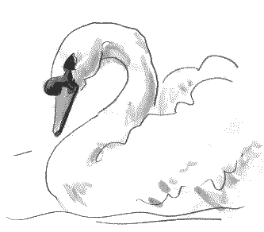
un cŷngne
| un daûtchet | tern |
| un dgillemot | guillemot |
| eune démouaîselle | great tit |
| eune démouaîselle | willow warbler, willow-wren |
| eune démouaîselle dé rôsiéthe | reed warbler (Acrocephalus scirpaceus) |
| eune démouaîselle du Ouaisné | Dartford warbler (Sylvia undata) |
| eune d'mouaîselle dg'ieau | aquatic warbler |
| eune démouaîselle dg'ieau | aquatic warbler |
| eune d'mouaîselle bottée | booted warbler |
| eune d'mouaîselle des hanniéthes | sedge warbler |
| eune d'mouaîselle des mathais | marsh warbler |
| eune d'mouaîselle du Nord | arctic warbler |
| eune d'mouaîselle êpèrviéthe | barred warbler |
| eune d'mouaîselle sombre | dusky warbler |
| eune d'mouaîselle sûffliérêsse | wood warbler |
| eune d'mouaîselle du pité | paddyfield warbler |
| eune démouaîselle du pité | paddyfield warbler |
| eune démouaîselle dé gardîn | garden warbler |
| eune d'mouaîselle dé gardîn | garden warbler |
| eune démouaîselle à critchet | grasshopper warbler |
| eune d'mouaîselle à critchet | grasshopper warbler |
| un d'mié-pigeon | turtle dove |
| un êcoufl'ye | peregrine falcon |
| un êpèrvi | sparrow hawk |
| un êprivyi, gris êprivi | grey plover |
| un êprivyi doré | golden plover |
| un êprivyi doré Améthitchain | American golden plover |
| un êprivyi à rouoges pids | red-footed falcon |
| un êpeûtheux Arctique | Arctic skua |
| un êteurcélet, un teurcélet, un torsolet | kestrel, sparrow hawk |
| un êteurcélet des mathais | marsh harrier (Circus aeruginosus) |
| un êtourné | starling |
| d's êtournieaux | starlings |
| un faîsan | pheasant |
| eune folle-mauve | fulmar |
| eune folle-mauve du Nord | Northern fulmar, Arctic fulmar (Fulmarus glacialis) |
| eune folle-mauve du Sud | Southern fulmar, Antarctic fulmar (Fulmarus glacialoides) |
| un gars | gander |
| un pithot, un pirot | gander |
| un fliamant | flamingo |
des fliamants
| eune gaude | common guillemot |
| eune gaûlouoche à néthes ailes | black-winged stilt |
| eune gailloche à néthes ailes | black-winged stilt |
| un geai | jay |
| un glianneux, un gliaineux | wagtail |
| eune glinne | hen |
| eune glinnette | small hen |
| la gode | shearwater |
| la gode à rouoge bé | puffin |
| eune gode des Baléares | Balearic shearwater |
| eune gode êmittée | sooty shearwater |
| un godîn | razorbill |
| un grand loup, un grand lou | great northern diver |
| la grand' néthe | swift |
| eune grand' poutchette | great crested grebe |
| eune grand' teurcélet | sparrowhawk (f) |
| un gris eprivyi | grey plover |
| un gris linnot | linnet |
| lé gris mêle | mistle thrush |
| un gris pliacard | fieldfare |
| eune grive | songthrush |
| eune grive dé france | redwing |
| eune grive dé Jèrri | songthrush |
| eune rouoge grive | redwing |
| un gros-bé | house sparrow |
| eune grôsse grive | songthrush |
| un hobé | hobby |
| eune haube à myi | honey buzzard |
| eune hèrbette | mistle thrush |
| eune hèrbette | redshank |
| eune hèrbette dé grève | redshank, dunlin |
| eune hèrbette dé mé | dunlin |
| eune hèrbette à gris pétra | pectoral sandpiper |
| un héthon, un héron | heron |
| eune héthonde | swallow |
| la héthonde dé falaise | swift |
| eune héthonde dé cheunm'née | swallow |
| eune héthonde dé mé | tern |
| eune héthonde dé tchèrquéthie | swallow |
| eune huppe | nightjar; hoopoe |
| un jaune êprivyi | golden plover |
| lé jaune pliacard | mistle thrush |
| un jaune s'meux | yellow wagtail |
| un jaûnouais | yellow hammer |
| un labouotheux | wagtail |
| la lavandgiéthe | wagtail |
| eune laverêsse | grey wagtail |
| eune lav'rêsse à néthe tête | black-headed wagtail |
| eune lavandgiéthe à néthe tête | black-headed wagtail |
| un linnot | linnet (male) |
| eune linnotte | linnet (female) |
| un loup d'mé, un lou d'mé, un grand lou | great northern diver |
| un maillard | mallard |
| un moustachi d'rôsiéthe | bearded reedling/bearded tit |
| un mange-moûque à myi | bee-eater |
| un marté, un martîn | house martin |
| un martinnet, un martinnet d'mielle | sand martin |
| un martinnet d'cârriéthe | sand martin |
| lé marté | spotted flycatcher; blackcap |
| un marté pielé | pied flycatcher |
| eune mathanne | oyster catcher |
| la mauve à maq'thé | gannet |
| eune mauve | herring gull |
| mauve Caspienne | Caspian gull |
| eune mauve d'la Méditérrannée | Mediterranean gull |
| eune mauve d'la Mé du Mitan | Mediterranean gull |
| la maûvette | black-headed gull |
| lé maûvi | redwing |
| un mêle | blackbird (male) |
| lé mêle à blianche gorge | ring-ouzel |
| eune mêlerêsse | blackbird (female) |

un mêle
| lé mèrgaud | gannet |
| eune mèrgot | magpie (female) |
| eune mèrquerole | coot |
| eune mèrcrole | coot |
| eune méthe du coucou | lark |
| eune mignonne dé cardrinnette | goldfinch |
| eune mignonne dé cardronnette | goldfinch |
| eune moscovie | muscovy duck |
| un mouesson | house sparrow |
| un mouosson | house sparrow |
| un mouesson à gros bé | house sparrow |
| un mouesson à p'tit bé | hedge warbler |
| un mouosson d'fôssé | hedge sparrow |
| lé nanard | widgeon |
| la néthe héthonde | swift |
| la néthe mauve | great black-backed gull |
| eune néthe soucique | coaltit |
| eune néthe rouoge-coue | black redstart |
| eune néthe héthonde dé mé | black tern |
| un nièr daûtchet | sandwich tern |
| lé nièr-dos | great black-backed gull |
| eune orfinne | sea eagle |
| un ortolan | ortolan |
| eune ouaie | goose (female) |
| l'ouaîsé du R'nouvé | wryneck |
| un ouaîsé à blié | wryneck |
| un ouaîsé du coucou | chiffchaff |
| un ouaîsé à maqu'thé, un maqu'thé | wryneck |
| un ouaîsé d'St. Martîn | kingfisher |
| un ouaîsé du mais d'mai | whimbrel |
| eune outarde | great bustard; buzzard |
| un paon | peacock |
| lé pélican | pelican |
| eune pèrdrix | partridge |
| un pèrrot | parrot |

un pèrrot
| un pèrrotchet | parakeet |
| un pêtcheux | kingfisher |
| un pêtcheux d'St. Martîn | kingfisher |
| un picot | turkey |
| un picouais | treecreeper |
| eune pie | magpie (female) |
| un piêté | magpie (male) |

eune pie
| eune pie d'mé | oyster catcher |
| eune pie mathante | oyster catcher |
| eune pievie, un pievi | lapwing |
| un pievis | meadow pipit |
| un pigeon | pigeon |
| un pigeon ramyi | wood pigeon |
| un pigeon sauvage | wood pigeon |
| un pigeon d'mé, un pigeon d'falaise | rock dove |
| un pigeon d'colombyi | stock dove |
| un pilote du coucou | lark |
| un pînchon | chaffinch |
| lé pînchon d'France | brambling |
| un pîngouîn | penguin, razorbill, little auk |
| eune pîntarde | guinea-hen |
| un pique-en-bouais | green woodpecker |
| un pique-nouaix | nuthatch |

un pithot
| un pithot sauvage | wild goose, grey lag-goose, white-fronted goose, bean-goose, pink-footed goose |
| eune pithotte, eune pithette, eune pirette | goose (female) |
| un pithot à p'tit bé | pink-footed goose |
| eune poutchette à rouoge co | red-necked grebe |
| un pliacard | fieldfare |
| un pliacard dé moscovie | fieldfare (with black collar) |
| un pliacard dé France | fieldfare (small with white collar) |
| un poffîn | puffin |
| eune poutchette | slavonian grebe |
| eune poutchette | slavonian grebe |
| eune p'tite poutchette | slavonian grebe, little grebe |
| eune poule | hen |
| eune poule dg'ieau | moorhen |
| eune poule-mauve | great black-backed gull |
| eune poulette | pullet |
| un pouochîn | chick |
| eune pourpre hèrbette | purple sandpiper |
| un p'tit bé | hedge-sparrow |
| un p'tit boeu | dunlin, ringed plover, sanderling |
| un p'tit corbîn | crow |
| eune p'tite rouoge teunette | lesser redpoll |
| eune p'tite blianche gorge | lesser whitethroat |
| un p'tit bourdélot | little bunting |
| eune p'tite aigrette | little egret |
| eune p'tite mauve | little gull |
| un p'tit jaûnouais | cirl bunting Emberiza cirlus |
| un p'tit jèrriais | hedge-sparrow |
| eune p'tite alouette | meadow pipit |
| la p'tite bécachinne | jack snipe |
| la p'tite caûvette | jackdaw |
| un p'tit corlieu | whimbrel |
| lé p'tit moussieu | bluetit |
| un p'tit pigeon d'France | turtle dove |
| un p'tit pîngouîn | little auk |
| un p'tit teurcélet | sparrowhawk (m) |
| eune p'tite albette | little stint |
| eune p'tite alouette | meadow-pipit |
| un puant | swift, storm-petrel |
| un raîté | wren |
| un raîtelîn | wren |
| eune râle | rail |
| eune râle dé g'nêt | corn crake |
| eune râle dg'ieau | water rail |
| un rossîngno | nightingale; chaffinch |
| eune rouoge-coue | redstart |
| eune rouoge-gorge | robin |
| un rouoge linnot | linnet (male) |
| un rouoge mîngnonne | goldfinch |
| un St. Martinnais | kingfisher |
| eune sèrcelle, eune cèrcelle | teal |
| un s'meux | pied wagtail |
| eune soucique | long-tailed tit; bluetit; tit; goldcrest; firecrest |
| un sûfflieux | redshank; widgeon |
| un tchitte-tes-clius | chiffchaff; great tit |
| un teurt-co | wryneck |
| eune tiquelesse | small black-headed gull |
| un torsolé | kestrel |
| un toucan | toucan |
| un touônne-pièrre | turnstone |
| eune tourtérelle, eune teurtérelle | turtle dove |
| eune trâle | mistle thrush |
| un tui-tui | wryneck |
| un vautour | vulture |
| lé verdgé | greenfinch |
| un vèrdreu | hedge warbler |
| un vèrmingnon | greenfinch |
| un vèrt linnot | green linnet |
| un s'meux à tête chendrée | ashy-headed wagtail |
| un craûlant-coue à tête chendrée | ashy-headed wagtail |
| un craûlant-tchu à tête chendrée | ashy-headed wagtail |
| eune lavandgiéthe à tête chendrée | ashy-headed wagtail |
| eune lav'rêsse à tête chendrée | ashy-headed wagtail |
| un marté à tête chendrée | ashy-headed wagtail |
| eune bèrge à coue rîlyie | bartailed godwit |
| un marté à néthe tête | black-headed wagtail |
| un s'meux à néthe tête | black-headed wagtail |
| eune poutchette à nièr co | black-necked grebe |
| eune bèrge à néthe coue | black-tailed godwit |
| un pliongeux rîlyi | black-throated diver/black-throated loon |
| un daûtchet bridé | bridled tern |
| eune aigrette pique-bête | cattle egret |
| un corbe | common scoter |
| un bourdélot d'grain | corn bunting |
| eune soucique tupée | crested tit |
| un bé-crouaîsi | crossbill |
| eune blianche coue du d'sèrt | desert wheatear |
| un mêle dg'ieau | dipper |
| un r'doteux | dotterel |
| un bigathé d'Êgypte | Egyptian goose |
| eune bliue mauve | glaucous gull |
| un êteurcélet d'bouaîs'sie | goshawk |
| eune grande gaude | great shearwater |
| eune grande gode | great shearwater |
| un grand êpeûtheux | great skua |
| eune grande aigrette | great white egret |
| eune vèrte hèrbette | green sandpiper |
| un pifreux des mathais | greenshank |
| un gris miaûneux | grey catbird |
| un gris phalarope | grey phalarope |
| un bouvtheu à hague | hawfinch |
| eune blianche mauve | ivory gull |
| un tchildîr | killdeer |
| eune mauve miaûleûthe | kittiwake |
| eune mauve miaûleûse | kittiwake |
| un êpeûtheux à longue coue | long-tailed skua |
| un héthon d'niet | night heron |
| un marté êbliavé | pallid swift |
| eune mauve à bé rîlyi | ring-billed gull |
| un rose daûtchet | roseate tern |
| un rose êtourné | rosy starling |
| un batilieux | ruff |
| un pithot d'la Russie | Russian white-fronted goose |
| eune grande alouette dé grève | shore lark |
| un êpeûtheux | skua |
| un blianc cannard | smew |
| un pievis d'bouais | tree pipit |
| un linnot à jaune bé | twite |
| un corbe v'loûsé | velvet scoter |
| un pievis dg'ieau | water pipit |
| eune aile-chithée | waxwing |
| eune taque-taque | whinchat |
| eune alouette dé bouaîs'sie | woodlark |
| un jaune êvêque | yellow-crowned bishop |
| eune mauve à jaunes gambes | yellow-legged gull |
| un nièr piaillot | black kite |
| 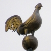 | 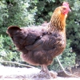 | 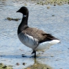 | 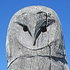 | 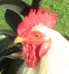 | 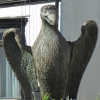 | 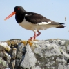 | 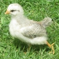 | 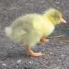 |

eune mauve
Viyiz étout: